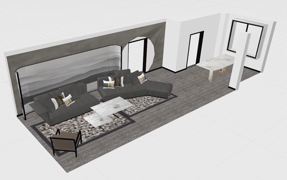
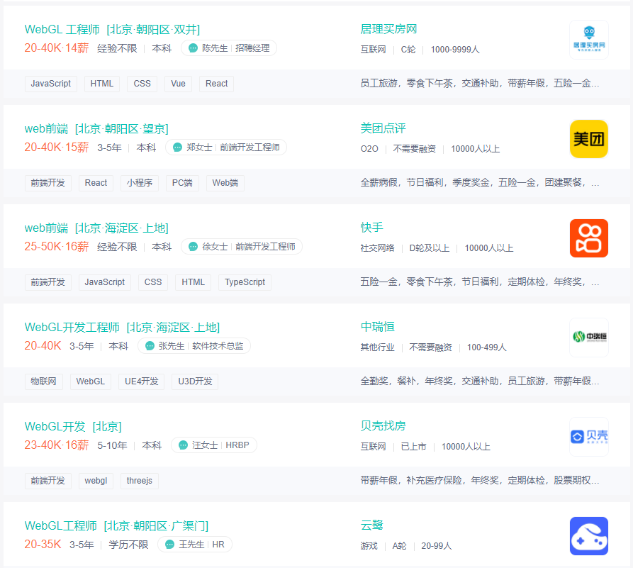

前言
课件地址
https://github.com/buglas/webgl-lesson
课前准备
- 安装webstorm 或vscode 开发工具。
- 安装live-server，用于启服务，安装方法 npm i -g live-server
- 需掌握es6、html、css 的基础知识。
- 数学基础，三角函数和向量（非必须）。
课堂目标
- 对webgl 的概念有一个整体认知
- 掌握webgl 基本绘图原理和流程
知识点
- webgl 概述
- webgl 最短教程 - 在画布上刷底色
- webgl 最简单图形 - 画一个点
第一章 webgl概述
1-webgl是什么？
webgl 是在网页上绘制和渲染三维图形的技术，可以让用户与其进行交互。
我们之前学过的div+css、canvas 2d 都是专注于二维图形的，它们虽然也能模拟一部分三维效果，但它们和webgl 比起来，那就是玩具枪和AK47的差别。

2-webgl行业背景
随着 5G 时代的到来，3D可视化需求大量涌现。3D 游戏，酷炫的活动宣传页，三维数字城市，VR全景展示、3D 产品展示等领域中，很多项目都是用 WebGL 实现的，也只能用WebGL来做，也就是说，WebGL 的时代就在眼前了。

通过一些实际案例，我们可以知道WebGL 能做什么：
- 3D数据可视化：https://cybermap.kaspersky.com/
- 家居卖场：https://showroom.littleworkshop.fr/
- 天猫宣传页：https://shrek.imdevsh.com/show/tmall/
- 汽车模型：https://ezshine.gitee.io/www/showcase/smart3dh5/loader.html
- 趣空间：https://www.3dnest.cn/case/
3-为什么要学习webgl ?
webgl 的行业背景决定了其在市场中具有广大的需求量。
webgl 发展潜力大，不像曾经的flash，学完了，还会面临被淘汰的风险。
webgl 的职场竞争力要比vue、react等主流框架小。
webgl薪资可观，一般只要你理解webgl原理，可以熟练使用three.js，会用react，月薪可达25k+
下面是我在boss 直聘上的截图：

综上所述，对公司而言，webgl 可以解决他们在三维模型的显示和交互上的问题；对开发者而言，webgl 可以让我们是实现更多、更炫酷的效果，让我们即使工作，也可以乐在其中，并且还会有一份不错的薪资。
第二章 webgl 最短教程
接下来咱们说一个在webgl 画布上刷底色的简单栗子。
1-刷底色的基本步骤
1.在html中建立canvas 画布
<canvas id="canvas"></canvas>
2.在js中获取canvas画布
const canvas=document.getElementById('canvas’);
3.使用canvas 获取webgl 绘图上下文
const gl=canvas.getContext('webgl’);
4.指定将要用来清空绘图区的颜色
gl.clearColor(0,0,0,1);
5.使用之前指定的颜色，清空绘图区
gl.clear(gl.COLOR_BUFFER_BIT);
整体代码
<canvas id="canvas"></canvas>
<script>
const canvas=document.getElementById('canvas');
canvas.width=window.innerWidth;
canvas.height=window.innerHeight;
const gl=canvas.getContext('webgl');
gl.clearColor(0,0,0,1);
gl.clear(gl.COLOR_BUFFER_BIT);
</script>
clearColor(r,g,b,a) 中的参数是红、绿、蓝、透明度，其定义域是[0,1]
2-灵活操作webgl中的颜色
css 中有一个“rgba(255,255,255,1)” 颜色，其中r、g、b的定义域是[0,255]，这里要和webgl里的颜色区分一下。
我们可以简单了解一下将css颜色解析为webgl 颜色的原理：
const rgbaCSS = "rgba(255,0,0,1)";
const reg = RegExp(/\((.*)\)/);
const rgbaStr = reg.exec(rgbaCSS)[1];
const rgb = rgbaStr.split(",").map((ele) => parseInt(ele));
const r = rgb[0] / 255;
const g = rgb[1] / 255;
const b = rgb[2] / 255;
const a = rgb[3];
gl.clearColor(r, g, b, a);
gl.clear(gl.COLOR_BUFFER_BIT);
在three.js 里有一个非常完美的颜色对象-Color，我们通过这个对象可以轻松的控制颜色。
案例-多姿多彩的画布
1.引入Color 对象
import { Color } from "https://unpkg.com/three/build/three.module.js";
我这是通过CDN 引入的，这种方法不适用于nodejs，因为nodejs 无法直接通过网络路径请求资源。
2.实例化Color 对象
const color = new Color(1, 0, 0);
3.建立色相偏移动画
!(function ani() {
color.offsetHSL(0.005, 0, 0);
gl.clearColor(color.r, color.g, color.b, 1);
gl.clear(gl.COLOR_BUFFER_BIT);
requestAnimationFrame(ani);
})();
关于颜色的操作我们就说到这，Color 对象还有很多其它方法，可以在threejs官网查看。
3-webgl 坐标系
webgl画布的建立和获取，和canvas 2d是一样的。
一旦我们使用canvas.getContext()方法获取了webgl 类型的上下文对象，那这张画布就不再是以前的canvas 2d 画布。
当然，它也不会变成三维的，因为我们的电脑屏幕始终是平的。
那这张画布有什么不一样了呢？
它的坐标系变了。
canvas 2d 画布和webgl 画布使用的坐标系都是二维直角坐标系，只不过它们坐标原点、y 轴的坐标方向，坐标基底都不一样了。
3-1-canvas 2d画布的坐标系
canvas 2d 坐标系的原点在左上角。
canvas 2d 坐标系的y 轴方向是朝下的。
canvas 2d 坐标系的坐标基底有两个分量，分别是一个像素的宽和一个像素的高，即1个单位的宽便是1个像素的宽，1个单位的高便是一个像素的高。
如下图，下图两个方块表示两个像素：

3-2-webgl的坐标系
webgl坐标系的坐标原点在画布中心。
webgl坐标系的y 轴方向是朝上的。
webgl坐标基底中的两个分量分别是半个canvas的宽和canvas的高，即1个单位的宽便是半个个canvas的宽，1个单位的高便是半个canvas的高。
如下图：

第三章 webgl 最简单的图形-画一个点
点是最简单的形状，是几何图形最基本的组成部分。接下来咱们就说一下在webgl 画布上如何画一个点。
首先咱们先说一下绘图的基本步骤。
1-绘图的基本步骤
找一张画布。
找一支画笔。
开始画画。

这三步是从现实生活中抽离出来的普遍规律，这在哪里都是适用的。
canvas 2d 的绘图逻辑就是这样的。首先要有canvas 画布，然后通过canvas 画布的getContext('2d') 方法获取一支二维画笔，然后直接在画布上画画。就像这样：
//canvas画布
const canvas=document.getElementById('canvas');
//二维画笔
const ctx=canvas.getContext('2d');
//设置画笔的颜色
ctx.fillStyle='red';
//用画笔画一个矩形
ctx.fillRect(20,20,300,200);
webgl 的绘图逻辑亦是如此，只不过它更像电脑绘画，其绘画的步骤里还多了一层介质。
这层介质就是手绘板，就像这样：
- 找一台电脑。
- 找一块手绘板。
- 找一支触控笔。
- 开始画画。

接下来，咱们就详细说一下canvas 2d 画图和webgl 画图的差异。
2-canvas 2d和webgl绘图的差异
在webgl里绘图，或许你会觉得也可以像canvas 2d那样，就像下面这样写：
//canvas画布
const canvas=document.getElementById('canvas');
//三维画笔
const ctx=canvas.getContext('webgl');
//设置画笔的颜色
ctx.fillStyle='red';
//用画笔画一个立方体
ctx.fillBox(20,20,300,200);
然而，实际上，webgl 的绘图逻辑和canvas 2d 的绘图逻辑还有一个本质的差别。
大家在学习html 的时候应该知道，浏览器有三大线程： js 引擎线程、GUI 渲染线程、浏览器事件触发线程。
其中GUI 渲染线程就是用于渲图的，在这个渲染线程里，有负责不同渲染工作的工人。比如有负责渲染HTML+css的工人，有负责渲染二维图形的工人，有负责渲染三维图形的工人。
渲染二维图形的工人和渲染三维图形的工人不是一个国家的，他们说的语言不一样。
渲染二维图形的工人说的是js语言。
渲染三维图形的工人说的是GLSL ES 语言。
而我们在做web项目时，业务逻辑、交互操作都是用js 写的。
我们在用js 绘制canvas 2d 图形的时候，渲染二维图形的工人认识js 语言，所以它可以正常渲图。
但我们在用js 绘制webgl图形时，渲染三维图形的工人就不认识这个js 语言了，因为它只认识GLSL ES 语言。
因此，这个时候我们就需要找人翻译翻译。
这个做翻译的人是谁呢，它就是我们之前提到过的手绘板，它在webgl 里叫“程序对象”。
接下来咱们从手绘板的绘图步骤中捋一下webgl 的绘图思路。
3-webgl 的绘图思路
- 找一台电脑 - 浏览器里内置的webgl 渲染引擎，负责渲染webgl 图形，只认GLSL ES语言。
- 找一块手绘板 - 程序对象，承载GLSL ES语言，翻译GLSL ES语言和js语言，使两者可以相互通信。
- 找一支触控笔 - 通过canvas 获取的webgl 类型的上下文对象，可以向手绘板传递绘图命令，并接收手绘板的状态信息。
- 开始画画 - 通过webgl 类型的上下文对象，用js 画画。
在上面的思路中，大家对其中的一些名词可能还没有太深的概念，比如程序对象。接下来咱们就详细说一下webgl 实际的绘图步骤。
4-webgl 的绘图步骤
1.在html中建立canvas 画布
<canvas id="canvas"></canvas>
2.在js中获取canvas画布
const canvas=document.getElementById('canvas');
3.使用canvas 获取webgl 绘图上下文
const gl=canvas.getContext('webgl');
4.在script中建立顶点着色器和片元着色器，glsl es
//顶点着色器
<script id="vertexShader" type="x-shader/x-vertex">
void main() {
gl_Position = vec4(0.0, 0.0, 0.0, 1.0);
gl_PointSize = 100.0;
}
</script>
//片元着色器
<script id="fragmentShader" type="x-shader/x-fragment">
void main() {
gl_FragColor = vec4(1.0, 1.0, 0.0, 1.0);
}
</script>
5.在js中获取顶点着色器和片元着色器的文本
const vsSource = document.getElementById('vertexShader').innerText;
const fsSource = document.getElementById('fragmentShader').innerText;
6.初始化着色器
initShaders(gl, vsSource, fsSource);
7.指定将要用来清空绘图区的颜色
gl.clearColor(0,0,0,1);
8.使用之前指定的颜色，清空绘图区
gl.clear(gl.COLOR_BUFFER_BIT);
9.绘制顶点
gl.drawArrays(gl.POINTS, 0, 1);
整体代码
<canvas id="canvas"></canvas>
<!-- 顶点着色器 -->
<script id="vertexShader" type="x-shader/x-vertex">
void main() {
gl_Position = vec4(0.0, 0.0, 0.0, 1.0);
gl_PointSize = 100.0;
}
</script>
<!-- 片元着色器 -->
<script id="fragmentShader" type="x-shader/x-fragment">
void main() {
gl_FragColor = vec4(1.0, 1.0, 0.0, 1.0);
}
</script>
<script>
// canvas 画布
const canvas = document.getElementById('canvas');
canvas.width=window.innerWidth;
canvas.height=window.innerHeight;
// webgl画笔
const gl = canvas.getContext('webgl');
// 顶点着色器
const vsSource = document.getElementById('vertexShader').innerText;
// 片元着色器
const fsSource = document.getElementById('fragmentShader').innerText;
// 初始化着色器
initShaders(gl, vsSource, fsSource);
// 指定将要用来清理绘图区的颜色
gl.clearColor(0., 0.0, 0.0, 1.0);
// 清理绘图区
gl.clear(gl.COLOR_BUFFER_BIT);
// 绘制顶点
gl.drawArrays(gl.POINTS, 0, 1);
function initShaders(gl,vsSource,fsSource){
//创建程序对象
const program = gl.createProgram();
//建立着色对象
const vertexShader = loadShader(gl, gl.VERTEX_SHADER, vsSource);
const fragmentShader = loadShader(gl, gl.FRAGMENT_SHADER, fsSource);
//把顶点着色对象装进程序对象中
gl.attachShader(program, vertexShader);
//把片元着色对象装进程序对象中
gl.attachShader(program, fragmentShader);
//连接webgl上下文对象和程序对象
gl.linkProgram(program);
//启动程序对象
gl.useProgram(program);
//将程序对象挂到上下文对象上
gl.program = program;
return true;
}
function loadShader(gl, type, source) {
//根据着色类型，建立着色器对象
const shader = gl.createShader(type);
//将着色器源文件传入着色器对象中
gl.shaderSource(shader, source);
//编译着色器对象
gl.compileShader(shader);
//返回着色器对象
return shader;
}
</script>
对于上面的步骤1、2、3，大家应该都比较好理解，接下来咱们详细说一下第4 步，在script 里用GLSL ES语言写着色器。
5-着色器
5-1-着色器的概念
webgl 绘图需要两种着色器：
- 顶点着色器（Vertex shader）：描述顶点的特征，如位置、颜色等。
- 片元着色器（Fragment shader）：进行逐片元处理，如光照。
看了这两个名词的解释，我想很多初学者会是懵的。
我给大家翻译翻译：
补间动画大家知道不？顶点着色器里的顶点就是补间动画里的关键帧，片元着色器里的片元就是关键帧之间以某种算法算出的插值。当然，咱们webgl里的片元是像素的意思。
再给大家举一个更简单、更贴切的例子：
两点决定一条直线大家知道不？顶点着色器里的顶点就是决定这一条直线的两个点，片元着色器里的片元就是把直线画到画布上后，这两个点之间构成直线的每个像素。
关于概念咱们就说到这，接下来咱们说着色器语言。
5-2-着色器语言
webgl 的着色器语言是GLSL ES语言
- 顶点着色程序，要写在type=“x-shader/x-vertex” 的script中。
<script id="vertexShader" type="x-shader/x-vertex">
void main() {
gl_Position = vec4(0.0, 0.0, 0.0, 1.0);
gl_PointSize = 100.0;
}
</script>
- 片元着色程序，要写在type=“x-shader/x-fragment” 的script中。
<script id="fragmentShader" type="x-shader/x-fragment">
void main() {
gl_FragColor = vec4(1.0, 1.0, 0.0, 1.0);
}
</script>
void main() {…… } 是主体函数。
在顶点着色器中，gl_Position 是顶点的位置，gl_PointSize 是顶点的尺寸，这种名称都是固定的，不能写成别的。
在片元着色器中，gl_FragColor 是片元的颜色。
vec4() 是一个4维矢量对象。
将vec4() 赋值给顶点点位gl_Position 的时候，其中的前三个参数是x、y、z，第4个参数默认1.0，其含义我们后面会详解；
将vec4() 赋值给片元颜色gl_FragColor 的时候，其中的参数是r,g,b,a。
至于GLSL ES语言的其它知识，咱们会在后面另开一篇详解，这里先以入门为主。
在第6步中，我们使用了一个自定义的方法initShaders() ，这是用于初始化着色器的，接下来咱们详细说一下。
6-着色器初始化
初始化着色器的步骤：
建立程序对象，目前这只是一个手绘板的外壳。
const shaderProgram = gl.createProgram();建立顶点着色器对象和片元着色器对象，这是手绘板里用于接收触控笔信号的零部件，二者可以分工合作，把触控笔的压感（js信号）解析为计算机语言(GLSL ES)，然后让计算机(浏览器的webgl 渲染引擎)识别显示。
const vertexShader = loadShader(gl, gl.VERTEX_SHADER, vsSource); const fragmentShader = loadShader(gl, gl.FRAGMENT_SHADER, fsSource);将顶点着色器对象和片元着色器对象装进程序对象中，这就完成的手绘板的拼装。
gl.attachShader(shaderProgram, vertexShader); gl.attachShader(shaderProgram, fragmentShader);连接webgl 上下文对象和程序对象，就像连接触控笔和手绘板一样（触控笔里有传感器，可以向手绘板发送信号）。
gl.linkProgram(shaderProgram);启动程序对象，就像按下了手绘板的启动按钮，使其开始工作。
gl.useProgram(program);
上面第二步中的建立着色对象方法loadShader()，是一个自定义的方法，其参数是(webgl上下文对象，着色器类型，着色器源文件)，gl.VERTEX_SHADER 是顶点着色器类型，gl.FRAGMENT_SHADER是片元着色器类型。
function loadShader(gl, type, source) {
const shader = gl.createShader(type);
gl.shaderSource(shader, source);
gl.compileShader(shader);
return shader;
}
gl.createShader(type) ：根据着色器类型建立着色器对象的方法。
gl.shaderSource(shader, source)：将着色器源文件传入着色器对象中，这里的着色器源文件就是我们之前在script 里用GLSL ES写的着色程序。
gl.compileShader(shader)：编译着色器对象。
在以后的学习里，initShaders 会经常用到，所以我们可以将其模块化。
function initShaders(gl,vsSource,fsSource){
//创建程序对象
const program = gl.createProgram();
//建立着色对象
const vertexShader = loadShader(gl, gl.VERTEX_SHADER, vsSource);
const fragmentShader = loadShader(gl, gl.FRAGMENT_SHADER, fsSource);
//把顶点着色对象装进程序对象中
gl.attachShader(program, vertexShader);
//把片元着色对象装进程序对象中
gl.attachShader(program, fragmentShader);
//连接webgl上下文对象和程序对象
gl.linkProgram(program);
//启动程序对象
gl.useProgram(program);
//将程序对象挂到上下文对象上
gl.program = program;
return true;
}
function loadShader(gl, type, source) {
//根据着色类型，建立着色器对象
const shader = gl.createShader(type);
//将着色器源文件传入着色器对象中
gl.shaderSource(shader, source);
//编译着色器对象
gl.compileShader(shader);
//返回着色器对象
return shader;
}
export {initShaders}
后面在需要的时候，import 引入即可。
import {initShaders} from '../jsm/Utils.js';
总结
综上所述，webgl 绘图好麻烦啊！
麻烦不是不学的理由，因为后面还有three.js 为你排忧解难。
那我们为啥不直接学习three.js 呢？
那是因为three.js 若是只想画个旋转的立方体还好，若是要深入学习，实现复杂的模型交互逻辑，就必须要有webgl 基础了。
这一篇，我们讲了webgl 的基本概念，走了一遍webgl 绘图的基本过程，让大家对webgl 的绘图原理有了一个基本认知。
下一篇，我们将说一下js 如何向着色器发号施令，实现一个鼠标控制顶点位置的案例。